This is the first look at expression. Labels are deferred: this page describes the data, so we can decide how to classify later. Numbers are rank percentiles within each table (1.0 = the most up-regulated gene) and the source papers’ significance calls. Interpretation is marked as such.
amt1 protein rank at day 60; it climbs from 0.72 at day 18, the only N system that rises over timeMED4 raises its capacity to take up and process ammonium (amt1), urea (urt with urease) and cyanate (cyn with cyanase) as part of the N-starvation response. It sustains that capacity through 89 days of coculture; in the dying axenic culture these import systems fall back while the N-stress regulators stay up. Expression cannot name the compound used. In calibration experiments urt, cyn and the nitrite system focA rise on substrates other than their own, so their expression does not report what is present; amt1 was not calibrated. The dipeptide system (dpp) is raised in coculture protein but unresolved. No other nitrogen route shows a coculture signal beyond starvation. The nitrate channel clc2 is irrelevant (MED4 can’t use nitrate), and the broadly annotated routes were explored only. Envelope genes (murJ, and more weakly tolC, acrA, bamA) are up in coculture and not in the dying axenic culture. Because the axenic comparison is with a declining culture, none of these contrasts separates a partner effect from survival. “No signal” is not evidence that no other compound is taken up.
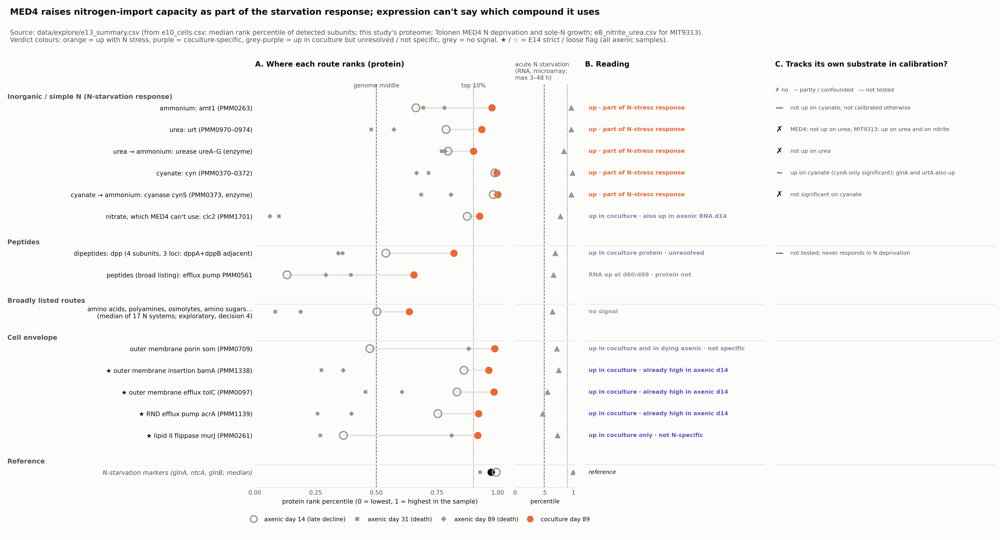
What the bars compare (Tolonen et al. 2006, microarrays). Each bar is the gene’s rank in one experiment, compared against cells in normal N-replete Pro99 medium.
Short names: amt1 = ammonium transporter; urt = urea transporter; cyn = cyanate transporter; focA = nitrite transporter (with nirA, nitrite reductase); dpp = di/oligopeptide transporter; urease = urea → ammonium; cynS = cyanase (cyanate → ammonium); glsF = glutamate synthase; markers = glnA (glutamine synthetase), ntcA (N-control regulator), glnB (PII), pipX. Non-N reference transporters: pst = phosphate, phn = phosphonate, sul = sulfate, fut/idiA = iron, mnt = manganese, sbtA = bicarbonate.
In Tolonen’s experiments, MED4 was grown on cyanate or urea as its only nitrogen source. On cyanate, the starvation marker glnA is up and so are both the cyanate (cyn) and urea (urt) systems. On urea, neither system rises and ntcA is near the bottom. Growing on cyanate is itself nitrogen-stressful; growing on urea is not. The systems follow the cell’s nitrogen status, so their expression can’t name which compound is present.
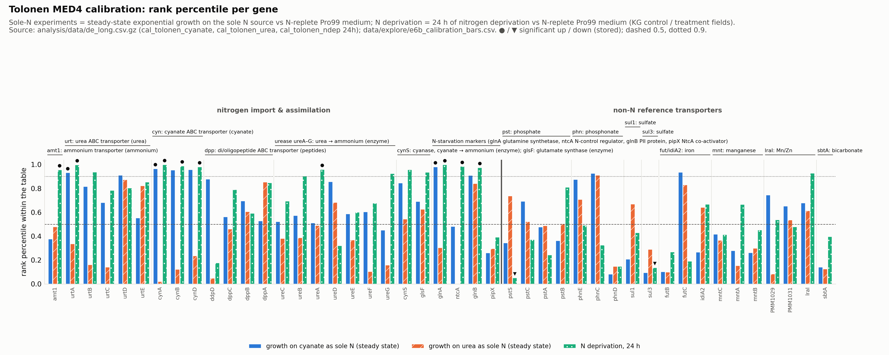
glnA are high on cyanate and after 24 h of deprivation; on urea, almost nothing in the N set is. dpp does not respond to deprivation.The same holds in a second strain. Tolonen also grew MIT9313 on nitrite or urea as its only nitrogen source. Both the nitrite system (focA + nirA) and urt are at the very top on both substrates: focA 1.000 / 0.999, urt 0.98 / 0.99. ntcA is high on both. The urease is higher on nitrite (0.95–0.98) than on urea (0.66–0.83). Each system passes the test on its own substrate and fails the specificity test.
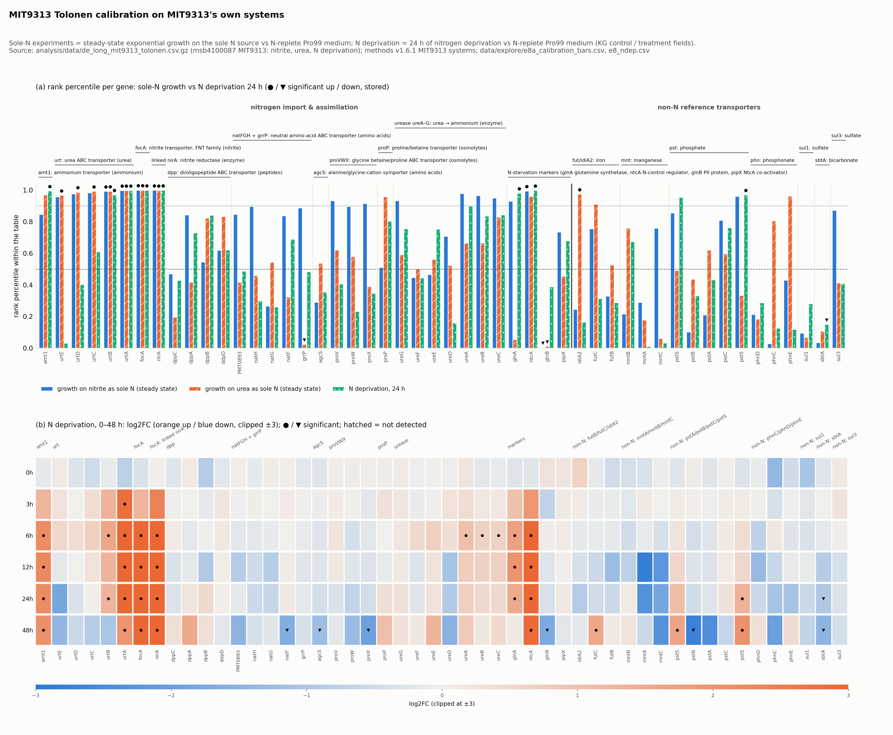
urtA, amt1, focA, nirA, ntcA and glnA rise; dpp and the amino-acid systems do not, as in MED4.[interpretation] In two strains on three substrates, the nitrogen import systems rise together whenever the nitrogen source isn’t ammonium. They report the cell’s nitrogen status, not the compound. (MED4 on urea is the exception, where nothing rises.)
amt1 joining late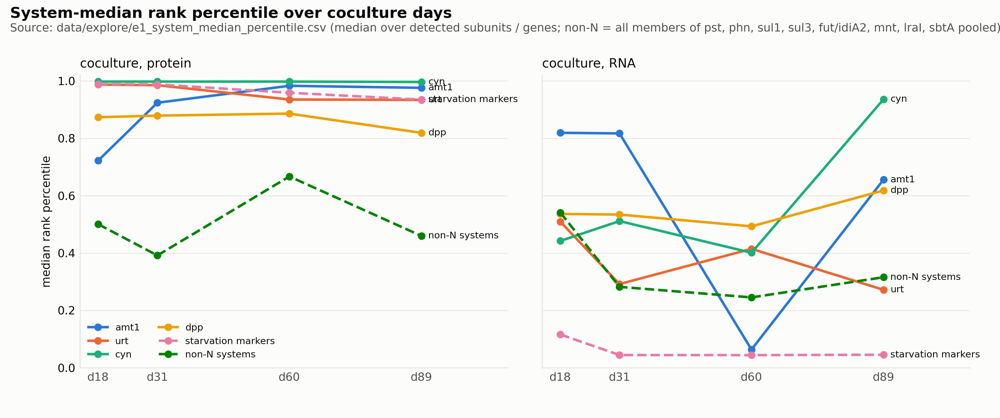
amt1 rises from 0.72 to 0.98, dpp stays at 0.82–0.89, and the non-N transporters sit at 0.4–0.7. RNA (right) is discussed in section 4.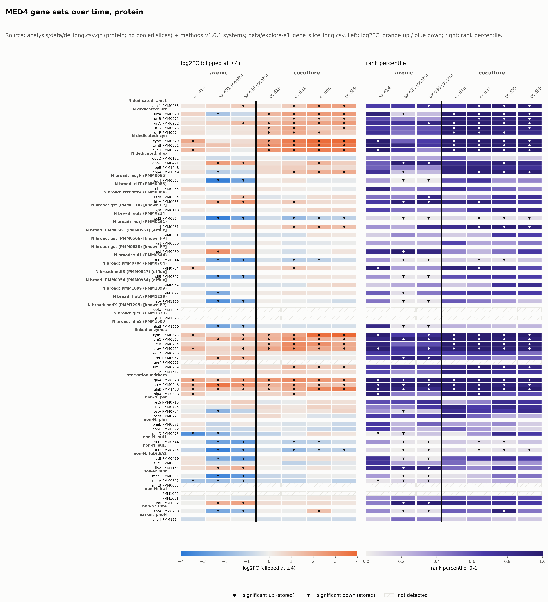
ureA/B/C/G) and cyanase (cynS) rise with their transporters. The phosphate, sulfate, iron and manganese transporters do not. Axenic days 31 and 89 are death phase.amt1’s rank minus the median of the urt and cyn subunits goes from −0.27 at day 18 to about 0 by day 60. amt1 catches up with the other systems; they don’t fall back. If ammonium supply partly relieved N stress (reading (ii)), urea and cyanate should have been damped; no damping is detectable, but ranks are at their ceiling here, so this is a weak test.amt1’s late rise could be slower protein build-up, a later NtcA threshold, or ammonium-dependent regulation. Expression can’t separate these.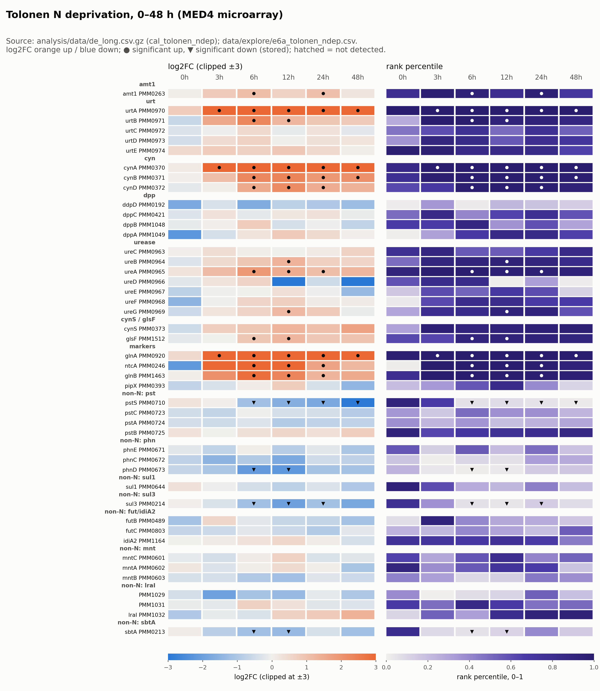
urtA, amt1, the markers and urease rise within hours. dpp does not respond within 48 h.Comparing like with like (corrected: an earlier version compared coculture protein with Tolonen RNA).
| dpp subunit | Tolonen RNA 0–48 h | Axenic d14 RNA | Coculture RNA d18 / d31 / d60 / d89 | Axenic d14 protein | Coculture protein d18 / d31 / d60 / d89 |
|---|---|---|---|---|---|
dppA PMM1049 | never significant | 0.93 ↑ | 0.60 / 0.76 / 0.75 / 0.76 | 0.76 | 0.91 / 0.96↑ / 0.97↑ / 0.96↑ |
dppB PMM1048 | never significant | 0.92 ↑ | 0.83 / 0.97↑ / 0.91 / 0.95↑ | 0.53 | 0.91 / 0.92 / 0.82 / 0.77 |
dppC PMM0421 | never significant | 0.62 | 0.26 / 0.31 / 0.24 / 0.48 | 0.55 | 0.84 / 0.84 / 0.95↑ / 0.87 |
ddpD PMM0192 | never significant | 0.62 | 0.47 / 0.18 / 0.09↓ / 0.28 | 0.43 | 0.55 / 0.21 / 0.08 / 0.16 |
dppA, dppC). The dppA/dppB locus is up in axenic day-14 RNA. But in the axenic culture’s own protein dppA never rises: 0.76 at d14, significantly down (0.17) at d31. Only dppC rises there (d31/d89). dpp is outside the N-starvation cluster and never responds within Tolonen’s 48 h. So it is neither clearly a starvation response nor clearly coculture-specific.dppC and ddpD, on separate loci, don’t follow dppB/dppA, and ddpD RNA goes down. Either they are regulated separately, or the methods step joined pieces from three loci that don’t act as one system. To revisit.Culture states (researcher’s account). Axenic day 11: exponential, beginning to run out of nitrogen. Axenic “day 14”: sampled around day 14 and paired with coculture day 18; already late decline, most cells dying, very starved. Axenic cultures move through N exhaustion and decline faster than cocultures, so the same calendar day is not the same stage. The coculture’s state at these points is not known.
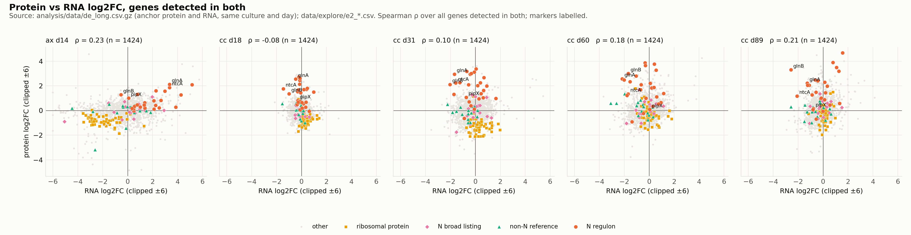
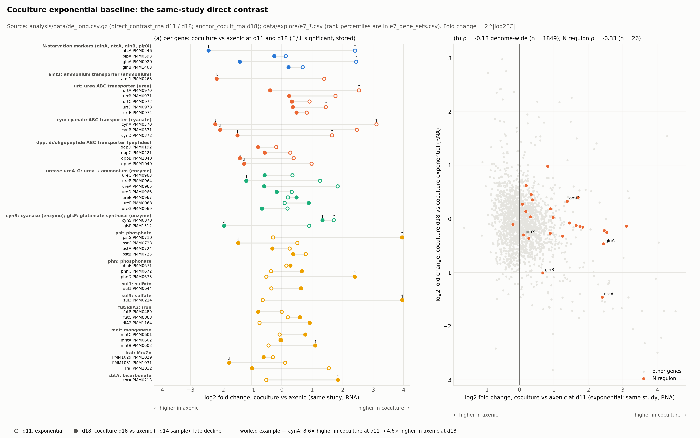
cynA is 8.6× higher in coculture at d11 and 4.6× higher in axenic at d18. The whole N set flips from right to left, while the phosphate, sulfate and iron transporters move right. (b) Each gene’s d11 difference against its anchor coculture d18 change.gaps_and_friction.md.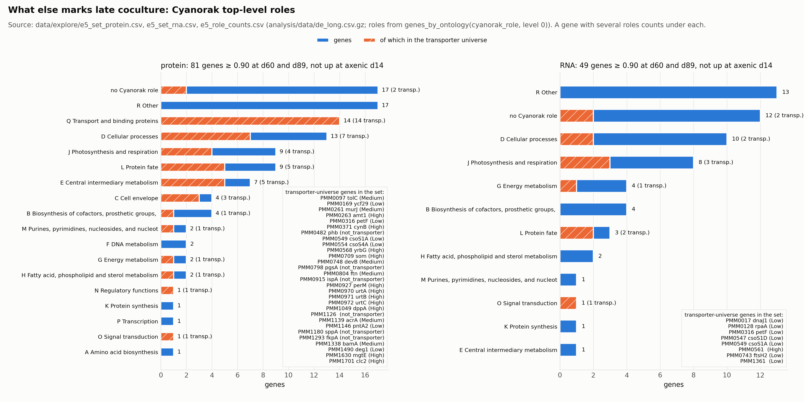
amt1, cynB, urtA/B/C, dppA, the porin som, perM, mgtE, clc2. Outer-membrane and export genes (tolC, acrA, bamA, murJ) and urease are also in the set.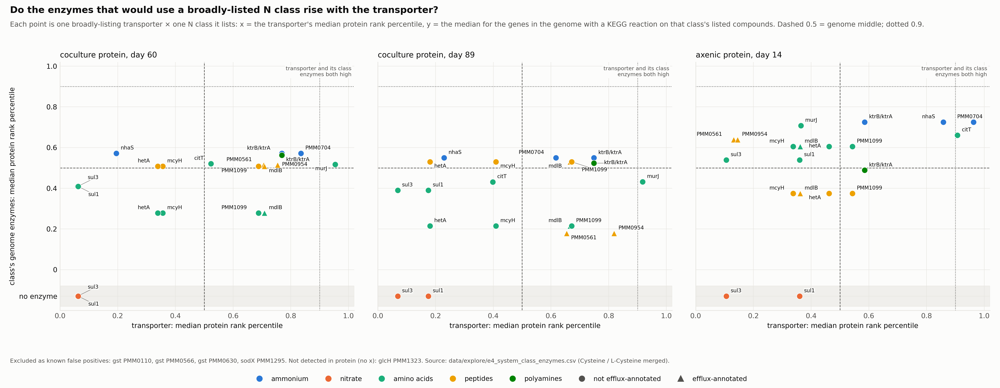
sul1 lists amino acids). Each point is one such transporter × class. x = the transporter’s protein rank; y = the median rank of the genes that could consume that class. If a transporter really carried the class, both would be high (top right). No point gets there. In late coculture the class enzymes sit at 0.2–0.57, around the genome middle, even for the highest transporters (murJ, PMM0704, ktrAB). They were somewhat higher in the late-decline axenic sample (0.37–0.72). Nitrate has no enzymes in MED4 (grey strip). Known false positives excluded.natF is a single subunit in one of two cultures, and a phosphonate gene is up in the same table.Tolonen’s study clustered MED4 genes by how they respond to N deprivation: 9 groups, 410 genes. Two groups rise strongly within 3–6 h: c1 (cynA, glnA, urtA) and c2 (ntcA, glnB, cynB + others). Together they form the N-starvation stimulon, the genes that respond together to this stimulus. That is an empirical gene set to use instead of our three hand-picked markers. An iron-starvation study (Thompson 2011) offers the same for iron.
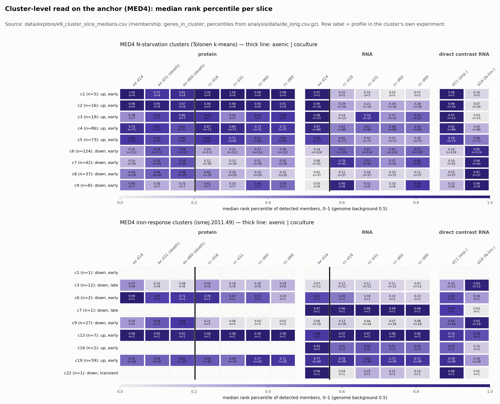
ntcA eases, glnB rises).cynS, urtC/D/E or the broad systems, so the clusters can’t settle the dpp question.cynA with the N set, so it needs checking before it carries weight.dppB/dppA locus responds to starvation while dppC/ddpD don’t follow.amt1’s late rise (+0.31 margin) as standing out, given that cyn was already at its maximum by day 14 (+0.01 margin)?